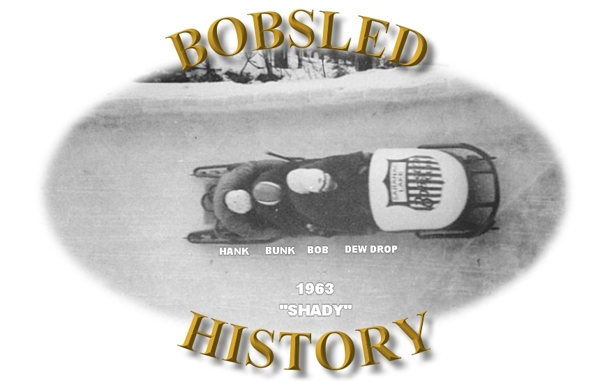
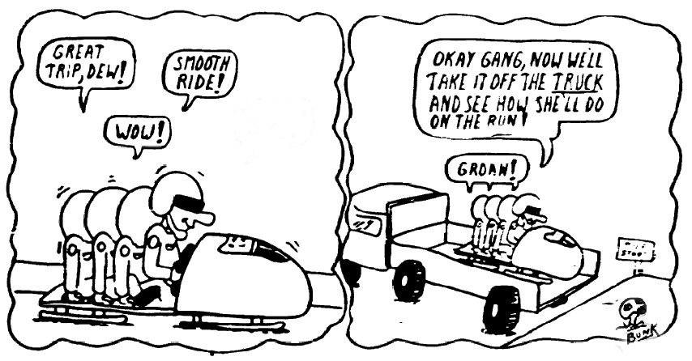
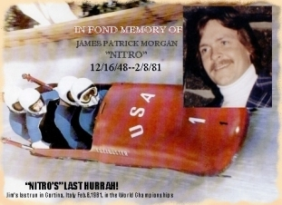
The sleds weren't exactly high-tech either but they came shooting down the mile and a half run faster than any sane person would care to travel under those circumstances. There was no suspension for the runners and the steering was done with wheels, which gave less control and feel of the run than the ropes that the europeans used. (Americans have gone to using ropes exclusively over the last few decades.) There was no protection on the sides of the sled and injured shoulders and elbows were accepted as just part of the sport. You held onto canvas straps with rubber balls attached and hoped for the best as you careened down the course while wearing a leather helmet which you knew wouldn't be much help in protecting your noggin in the likely event of an 81.
No wonder these guys and, yes, gals hoisted a few brews after surviving another day of sliding, they deserved it!
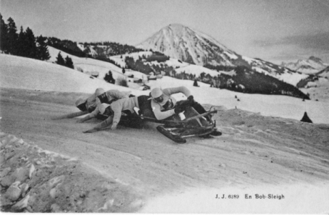
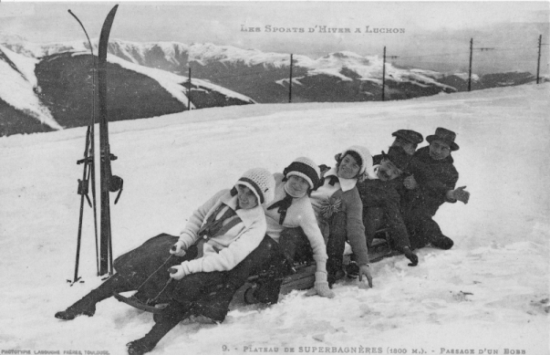
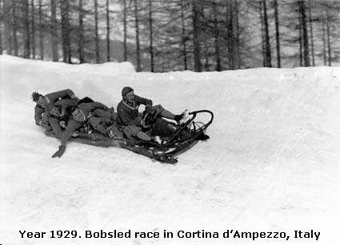
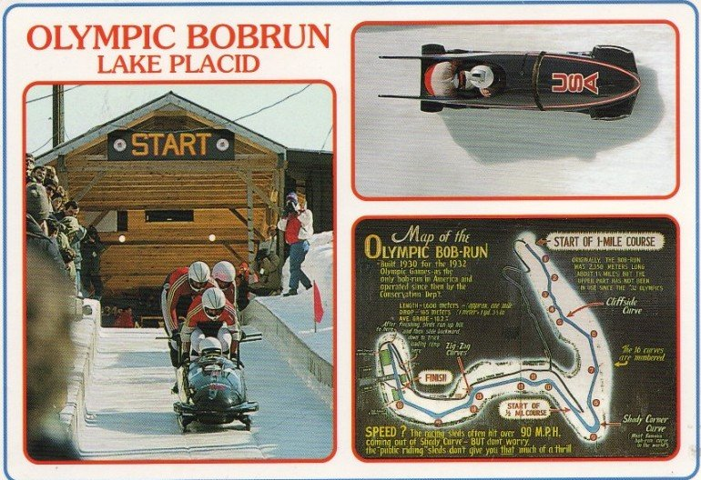
 WHITEFACE CURVE, WAY ABOVE "OLD" SHADYTHROUGH "OLD" SHADY AND HEADED FOR ZIG ZAGIN ZIG ZAGFINISHANOTHER LOOK AT THE FINISHCONSERVATION DEPARTMENT CREW 40'sCIVILIAN CONSERVATION CORPS SLED
WHITEFACE CURVE, WAY ABOVE "OLD" SHADYTHROUGH "OLD" SHADY AND HEADED FOR ZIG ZAGIN ZIG ZAGFINISHANOTHER LOOK AT THE FINISHCONSERVATION DEPARTMENT CREW 40'sCIVILIAN CONSERVATION CORPS SLED
Hubert Stevens had ideas about how an improved sled could enliven the sport, but had no idea how to implement them.
Forty miles north of Hubert Stevens' home lived Robert J. Linney, a man with the knowledge, the materials and the equipment that Hubert Stevens was searching for. Only 27 years old, Mr. Linney was superintendent at the Chateaugay Ore and Iron Companies in his hometown of Lyon Mountain. He had been employed there since his graduation in 1929 from Yale University as a mining engineer. He later served as a foreman before becoming mine superintendent.
When he met Hubert Stevens, Mr. Linney had never seen a bobsled, much less driven one. But his ignorance seemingly proved to be an advantage, and he took to the task of redesigning the sled with zeal and dedication. By the time Mr. Linney and his brother William finished competing in bobsledding more than a decade later, their design changes had revolutionized the sport and their sleds had set record times at Mt. Van Hoevenberg.
Named "Iron Shoes", Mr. Linney's was the first all-metal bobsled. It was made with materials mined solely at Lyon Mountain and cost about $1,000 to $1,500 more than the standard four-man bobsled of the day.
Mr. Linney had little difficulty obtaining the men and materials from Chateaugay Ore and Iron Companies to produce the bobsled. It could help America's bobsled team -and it certainly did- and thus the venture was considered patriotic. Besides, it also was good publicity for the company.
Conceived by Hubert Stevens' ambition and Bob Linney's engineering expertise, "Iron Shoes" made its debut at Mt. Van Hoevenberg on Jan 11,1936. It measured 11 feet seven inches in length and was two feet, 10 inches in width. Its front runners were just slightly longer than three feet, 11 inches and its rear runners measured about 4 1/2 feet.
With Bob at the controls, "Iron Shoes" made its first decent run. Long, silvery and sleek, it attracted a good amount of attention during its inaugural run, but not nearly as much as it did one week later.
Mr. Linney returned the next weekend with his team, the Lyon Mountain Miners, and won the North American Junior Bobsled Championship. In a sport where winners often are determined by hundredths of a second, the miners' time was eight seconds faster than their closest challenger.
Later a second all iron sled was put into competition. This was named the "Iron Clipper".
With the "Iron Clipper" the Lyon Mountain Miners won the North American Club Championship in 1946 and the National Amateur Athletic Union Title in 1948. This was the last time either of the Linney brothers won in bobsledding competition. Both returned to their full-time occupations of mining. William Joseph Linney died on September 23, 1956 at Port Henry, N.Y. at the age of 44.
THE LYON MOUNTAIN MINERS BOBSLED TEAM OF MINEVILLE, NY (IRON SHOES)
THE MINERS AND A MINOR (IRON SHOES)
THE MINERS ABOARD IRON CLIPPER
KATE SMITH "PILOTING" IRON CLIPPER
KATE SMITH AT THE BOBRUN
THE SARATOGA BOBSLED TEAM
THE PLATTSBURG BOBSLED TEAM
ELIZABETHTOWN CLUB EARLY NYS CONSERVATION DEPT TRUCK (thanks to Rudi Snyder)CATHERIN DEWEY, PRETTY PILOTCATHERIN DEWEY AND CREW, LAKE PLACID CLUB SNOBIRDSKATE SMITH PRESENTING TROPHY TO CATHERIN DEWEYARTHUR GODFREY VISITS THE BOBRUN
EARLY NYS CONSERVATION DEPT TRUCK (thanks to Rudi Snyder)CATHERIN DEWEY, PRETTY PILOTCATHERIN DEWEY AND CREW, LAKE PLACID CLUB SNOBIRDSKATE SMITH PRESENTING TROPHY TO CATHERIN DEWEYARTHUR GODFREY VISITS THE BOBRUN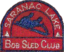
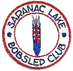
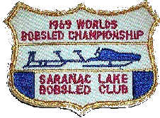
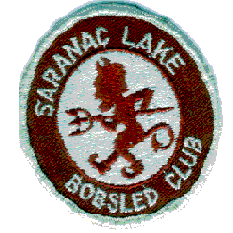
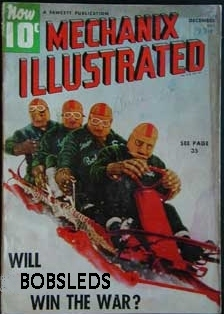
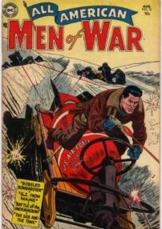
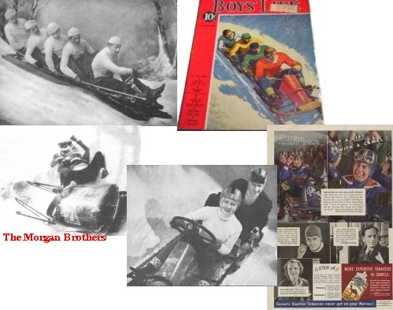
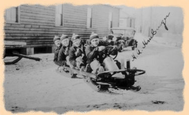
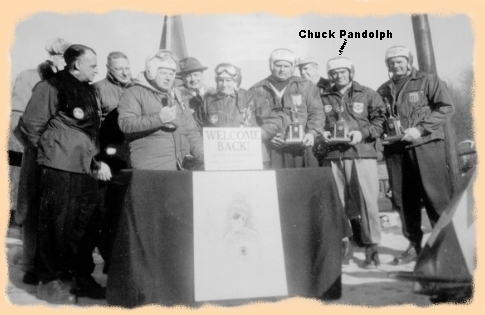
In the four photos below are Henry Homburger, Percy Bryant, F. Paul Stevens and Edmund Horton. Henry Homburger designed the bobrun, so he knew the way down. The team was sponsored by the Saranac Lake Elks Club BPOE #1508.
They took a silver medal at the 1932 Olympics.
SARANAC LAKE RED DEVIL BOBSLED CLUB, 1928-THE PHANTOMS OF THE RUNSARANAC LAKE BOBSLED CLUB, 1930SARANAC LAKE RED DEVIL BOBSLED CLUB, 1932SARANAC LAKE RED DEVIL BOBSLED CLUB, 19321932 OLYMPIC BOBSLED GROUP, LAKE PLACIDSARANAC LAKE BOBSLED CLUB, 1932- IN ZIG ZAG1936 USA OLYMPIC BOBSLED TEAM , GARMISCH, GERMANYHe was an accomplished sportsman, well-known on the Cresta run at St Moritz and for many years the unbeaten champion. He led the bobsleigh team for the USA in the Winter Olympics of 1928 at St Moritz, and at the 1932 Winter Olympics at Lake Placid. At this event, he carried the flag for the Americans at the opening ceremonies, presided over by Governor Franklin D Roosevelt of New York. He was invited, but declined to lead the bobsleigh team in the 1936 Winter Olympics.
The Billy Fiske trophy is named for him, the youngest Gold Medal winner, at the age of 16, in the sport.
BILLY FISKE AND CREW
In this photo Luftwaffe Captain, Werner Zahn, is presenting the world championship trophy to U.S. driver, Billy Fiske, during Feb. 15 ceremonies at Mt. Van Hoevenberg. At left, Paul Stevens,of second-place U.S. team, holds microphone. Other gold medalists on Fiske sled are (left to right): Edward Eagan, Clifford Gray and Jay O'Brien. German driver Hans Kilian is behind Gray; at far right is Swiss driver Reto Capadrutt.
SARANAC LAKE BOBSLED CLUB, MONK FLAGG & CREW 1941CLARENCE PRESTON, OF THE ONEONTA BOBSLED CLUB, DRIVING "THE CITY OF THE HILLS" INTO SHADY, 1951 YET TO BE IDENTIFIED CREW -SARANAC LAKE BOBSLED CLUBSTAN BENHAM, JERRY TENNANT, GARY SHEFFIELD, CHUCK PANDOLPH--1961--STAN BENHAM, SHARON J. MAUS (State Conservation Commissioner), JIM BICKFORD AND PAT MARTINJIM BICKFORD ON THE BRAKES --UNKNOWN LADY AT THE WHEEL TUFFY LATOUR AND PAUL DUPREE 1940'sSMOKIN' FRANCIS TYLERIT'S ALWAYS A GOOD IDEA TO HAVE A QUICK SHOT BEFORE A RUNTHE STEVENS BROTHERS RELIVE THE PASTSARANAC LAKE BOBSLED CLUB- 40'sOUR OLD BUDDY, CHUCK PANDOLPH, BRAKEMAN AND JACK HELMER, PILOT-- OSLO, NORWAY-1952GROUP OF OLD-TIME SLIDERSJERRY MORGAN AND BOB McGONEGAL, "THE VOICE OF THE BOBRUN"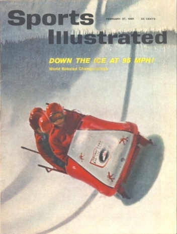
DEW DROP MORGAN AND HIS CREW, HANK NEVERET, BUNK GRIFFIN AND BOB CROWLEY TAKING SHADY IN THE "SLIDING SIXTIES" Joe McKillip was next on the starting line and, after some convincing, decided not to make his run. Bob McGonegal, "The Voice of The Bobrun" announced that the run was now closed and everyone put away their sleds and left in a daze. Most went off to get drunk.
Sergio had recently moved to Canada from Italy, where he and Eugenio Monte had ruled bobsledding. After the move to Canada, Zardini would often come to Saranac Lake to stop at Chuck's Bar to visit his old buddy, Chuck Pandolph. He never forgot his old bobsledding friends and they never forgot him.
Mike Young, Sergio's number three man and twenty two years old at that time, needed extensive reconstruction on his face after the accident but returned to bobsledding for a couple of seasons. Mike had been introduced to bobsledding by his cousin, Vic Emery, a top notch driver and good friend of both Zardini and Monte. Mike and Vic were inducted into the Canada Sports Hall of Fame several years ago. Last I heard, Mike was living in Dallas, Texas and working as a business consultant. He has no memory of the crash itself and that may be a blessing.
SERGIO ZARDINI'S "81"
ZARDINI AND MIKE YOUNG ON THE ICE
ZARDINI LOSES BRAKEMAN IN 1961
GIL JONES, FRED FORTUNE AND JIM LAMY FREDDIE FORTUNE-1969 JIM LAMY AND BUCKY SNOWBUCKY SNOW AND BILL DUNDON-2003- BRENT "STUNTMAN" RUSHLAW WITH WATERHOLE #3 BOBSLEDBRENT "STUNTMAN" RUSHLAW AND "B.J." DICKIE IN CLIFFSIDE"STUNTMAN" AND "B.J." DICKIE TAKING CURVE EIGHTBRENT RUSHLAWBRENT RUSHLAW MISSES BY A HAIR IN 1988BILL WHITE, BRENT RUSHLAW AND MIKE WASKOTWO MAN - BRENT RUSHLAW AND MIKE WASKOFOUR MAN START- BRENT, HAL HOYE, MIKE WASKO AND BILL WHITEFOUR MAN CURVE - BRENT, HAL HOYE, MIKE WASKO AND BILL WHITEFOUR MAN - BRENT, HAL HOYE, MIKE WASKO AND BILL WHITEFOUR MAN FINISH - BRENT, HAL HOYE, MIKE WASKO AND BILL WHITE"BRENT RUSHLAW DAY" IN SARANAC LAKEBRENT RUSHLAW - BUD SLEDPAUL LAMY TAKING CURVE EIGHTSEAN MORGAN, SPIDER DUPREY, ? , BRENT RUSHLAW, JOHN MORGAN-1975WE'LL NEVER FORGET OUR OLD BUDDY, JIMMY "NITRO" MORGAN 1975
BRENT "STUNTMAN" RUSHLAW WITH WATERHOLE #3 BOBSLEDBRENT "STUNTMAN" RUSHLAW AND "B.J." DICKIE IN CLIFFSIDE"STUNTMAN" AND "B.J." DICKIE TAKING CURVE EIGHTBRENT RUSHLAWBRENT RUSHLAW MISSES BY A HAIR IN 1988BILL WHITE, BRENT RUSHLAW AND MIKE WASKOTWO MAN - BRENT RUSHLAW AND MIKE WASKOFOUR MAN START- BRENT, HAL HOYE, MIKE WASKO AND BILL WHITEFOUR MAN CURVE - BRENT, HAL HOYE, MIKE WASKO AND BILL WHITEFOUR MAN - BRENT, HAL HOYE, MIKE WASKO AND BILL WHITEFOUR MAN FINISH - BRENT, HAL HOYE, MIKE WASKO AND BILL WHITE"BRENT RUSHLAW DAY" IN SARANAC LAKEBRENT RUSHLAW - BUD SLEDPAUL LAMY TAKING CURVE EIGHTSEAN MORGAN, SPIDER DUPREY, ? , BRENT RUSHLAW, JOHN MORGAN-1975WE'LL NEVER FORGET OUR OLD BUDDY, JIMMY "NITRO" MORGAN 1975 "NITRO" MORGAN AND JEFF BEAMISH 1976"NITRO" AND JEFF 1975"NITRO" MORGAN AND CREW AT THE TOP"NITRO" MORGAN AND JEFF BEAMISH "NITRO" MORGAN, RED HOGLE AND THE EXCALIBUR SLED NITRO 1975GREG BENHAM, NITRO AND JEFF BEAMISHTIM MARVIN AND KEN NEVERETT OUT OF SHADY 1973 JOHN MORGAN AT WORKJIMMY HICKEY PILOTING AIR FORCE ONEJIMMY HICKEY, GARY SHEFFIELD, B.J. DICKIE, BRENT RUSHLAW, WALT FINNEGAN BRENT-1978 WORLDS JACK SHEA AND LAKE PLACID MAYOR PEACOCKTHE NAVY TEAM, HIGH IN SHADYCANADIAN TEAMAUSTRALIAN TEAMSTART-2 MAN MARINE SLED 1975-PAUL VINCENT PILOT, TOM CROWLEY BRAKING1975-PAUL VINCENT PILOT, TOM CROWLEY BRAKEMAN, RECEIVING BEST SERVICE SLIDERS AWARD4 MAN MARINE SLED 1975-PAUL VINCENT PILOT, TOM CROWLEY BRAKING2 MAN MARINE SLED 1975-PAUL VINCENT PILOT, TOM CROWLEY BRAKINGPAUL VINCENT, TOM CROWLEY AND DONNA DE VARONA
"NITRO" MORGAN AND JEFF BEAMISH 1976"NITRO" AND JEFF 1975"NITRO" MORGAN AND CREW AT THE TOP"NITRO" MORGAN AND JEFF BEAMISH "NITRO" MORGAN, RED HOGLE AND THE EXCALIBUR SLED NITRO 1975GREG BENHAM, NITRO AND JEFF BEAMISHTIM MARVIN AND KEN NEVERETT OUT OF SHADY 1973 JOHN MORGAN AT WORKJIMMY HICKEY PILOTING AIR FORCE ONEJIMMY HICKEY, GARY SHEFFIELD, B.J. DICKIE, BRENT RUSHLAW, WALT FINNEGAN BRENT-1978 WORLDS JACK SHEA AND LAKE PLACID MAYOR PEACOCKTHE NAVY TEAM, HIGH IN SHADYCANADIAN TEAMAUSTRALIAN TEAMSTART-2 MAN MARINE SLED 1975-PAUL VINCENT PILOT, TOM CROWLEY BRAKING1975-PAUL VINCENT PILOT, TOM CROWLEY BRAKEMAN, RECEIVING BEST SERVICE SLIDERS AWARD4 MAN MARINE SLED 1975-PAUL VINCENT PILOT, TOM CROWLEY BRAKING2 MAN MARINE SLED 1975-PAUL VINCENT PILOT, TOM CROWLEY BRAKINGPAUL VINCENT, TOM CROWLEY AND DONNA DE VARONAFelix had also won two medals in the 1947 Worlds Cup. He garnered a silver while driving in the two-man race and claimed a gold as number three rider with Fritz Feierabend on the four-man. In both 1948 and 1949 he had taken gold medals in the two-man world's competitions.
Brakeman, Fritz Stoeckli, saved himself from injury by grabbing an Austrian flag as he passed underneath.
DEAD MAN'S CURVE-SWISS TEAM-GARMISCH, GERMANY-1953BRAKEMAN STOECKLI GRABS FLAGFELIX ENDRICHTHE 1980 OLYMPIANS -- NITRO MORGAN, ? , TOM CAROL, JEFF BEAMISHTHE 1980 OLYMPIANSTHE 1979 WORLDS TEAMTHE QUEBEC BOBSLEIGH1982 UNITED STATES WORLDS BOBSLED TEAMBOTTOMS UPLATVIANS GO RUNNERS UP ON SHADY TWO-2003TOURIST SLED COPIES LATVIA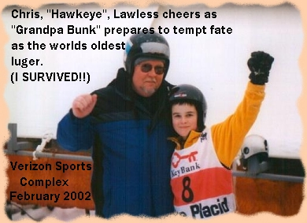